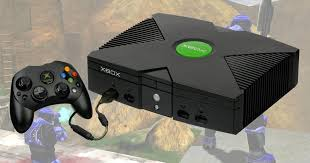
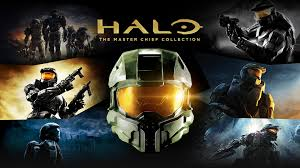
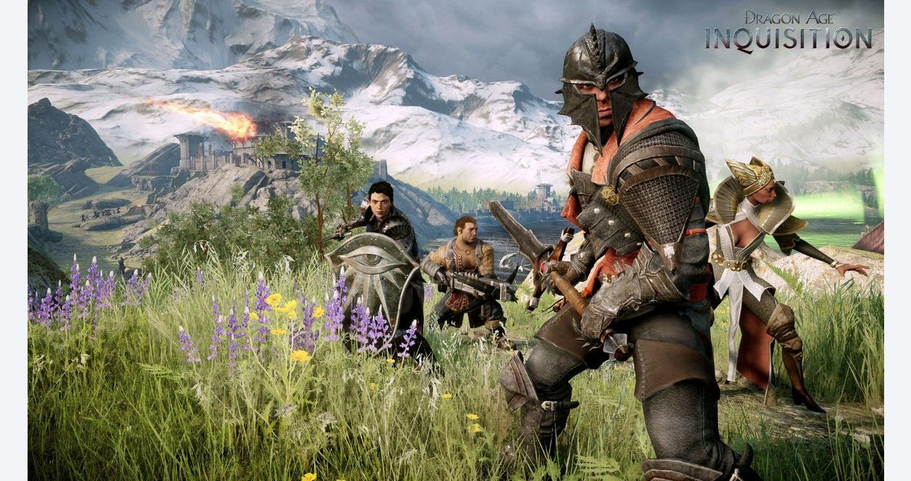
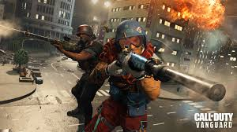
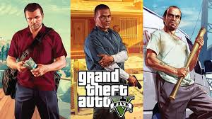

Xbox, lancée par Microsoft en 2001, est une marque de consoles de jeux vidéo et de services.
Elle a débuté avec la Xbox originale, introduisant des innovations comme Xbox Live pour le jeu en ligne.
Ses consoles, comme la Xbox 360 et la Xbox Series X|S, sont reconnues pour leur puissance et leur connectivité.
Xbox est aussi célèbre pour ses franchises populaires, notamment Halo et Forza.
Avec son service Xbox Game Pass, elle mise sur un modèle d'abonnement pour élargir l'accès aux jeux. Xbox reste un acteur majeur dans l'industrie du gaming.